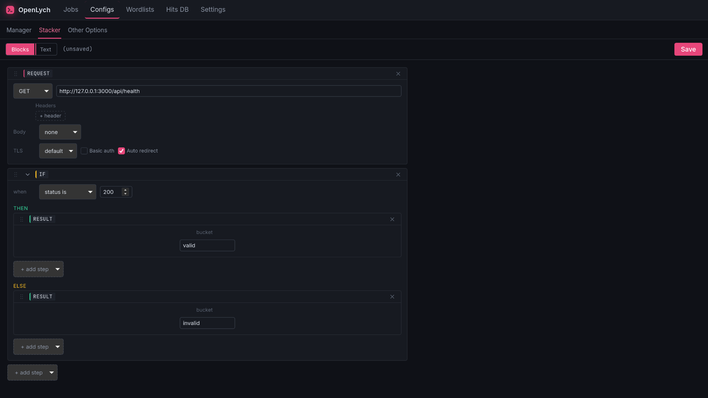
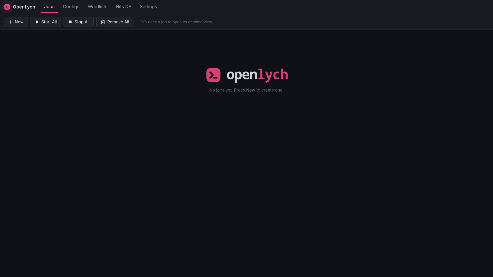
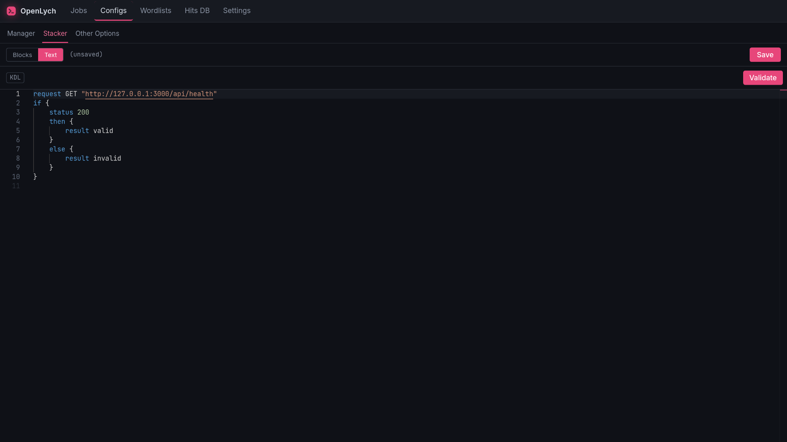
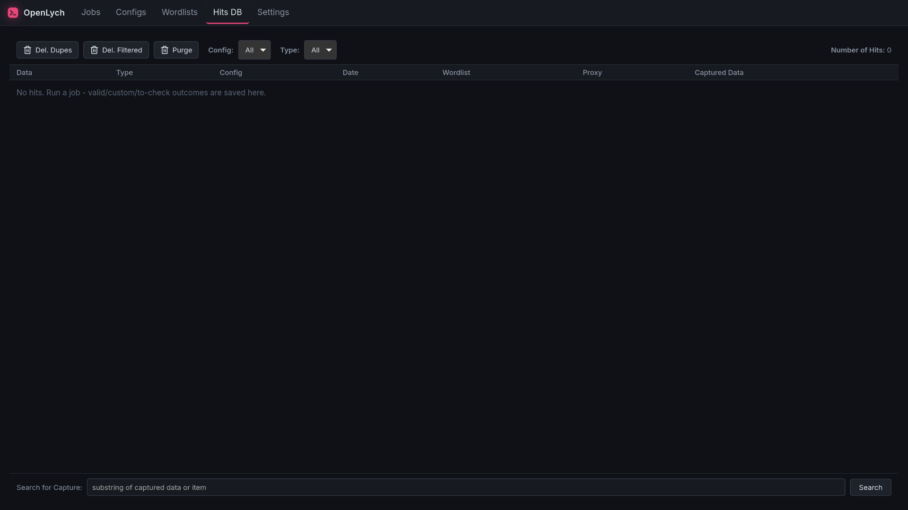

A local workbench
for request flows
Build a staged flow of steps, point a job at an input list, and run it across N parallel runners while results land live. HTTP requests, parsers, crypto, raw sockets, mail protocols, scripts, and a headless browser, all in one config.
Open source · runs entirely on your machine

Building a flow as visual blocks in the Config editor.
What it is
A tool for testing how a system answers, built, run, and inspected entirely on your own machine.
A flow is a top-to-bottom stack of steps: send a request, parse the response, compute a hash, branch on a condition, open a mail connection, drive a browser, or run a script. You build it as drag-to-reorder blocks or as KDL text; the two views edit the same file.
A job aims that flow at a wordlist or CSV and runs it once per line across N runners. Every line runs in its own cookie-jar session, so a login's Set-Cookie carries through that item's later requests automatically. Each item ends in an outcome bucket (valid, invalid, retry, or your own) with captured values attached, and the counters update live per runner.
It runs as a native desktop window, or headless as a local server you open in a browser. Both use the same UI over the same engine. Wordlists, proxies, configs, hits, and settings all live in one data folder on your disk.
What a flow can do
One window: Jobs, Configs, Wordlists, Proxies, Hits DB, Settings. One config language under all of it.
HTTP with full control
Templated headers and bodies (text, file, raw, multipart), Basic auth, a TLS floor, redirect handling, and a per-item cookie jar.
Five parse modes
Pull values out of any response by JSON path, LR (left/right), CSS selector, XPath, or regex, with prefix/suffix, all-matches, and capture flags.
60+ built-in functions
Hashes and HMAC, AES and RSA, bcrypt and scrypt, JWT, AWS4 signing, dates, random values, and captcha solving through 2Captcha or CapMonster.
Beyond HTTP
Raw TCP and UDP, WebSocket, DNS, POP3, IMAP, SMTP with attachments, FTP, and SSH, all as flow steps with named connection handles.
Headless browser steps
Drive Chromium over CDP from inside a flow: navigate, click, type, select, screenshot, execute JS. One isolated context per item.
Your own code
Inline JavaScript on an embedded engine, or Python and shell via subprocess, with variables crossing in and out by name.
Lists, files, dictionaries
Utility steps sort, shuffle, zip, and dedupe lists, read and write files in a sandboxed folder, and build dictionaries, all from a flow.
Proxies and banning
HTTP and SOCKS lists with a built-in checker, round-robin rotation, per-job use limits, and ban keys that drop a proxy on a blocked response.
Hits that travel
Hits persist to SQLite with filters and capture search, and can forward live to a webhook, a JSONL file, or a Telegram chat.
OpenBullet configs
Import OB1 LoliScript, OB2 LoliCode, and .opk packages; unmapped blocks become visible placeholders you finish by hand. Export back to LoliCode or .opk.
Local first
Dark/light themes, accent and density, engine defaults, notifications, sounds, and data tools, all stored on your machine. No cloud, no account.
What a flow looks like
The same config, as KDL text or as blocks. Here: a WebSocket echo, an SSH command, and a captcha-solved login step, all from shipped sample configs.
// echo over a WebSocket, reply into a variable
net ws_connect handle=ws into=c url="wss://ws.ifelse.io"
net ws_send handle=ws into=_ message="hello"
net ws_read handle=ws into=reply
// run a command over SSH
net ssh_connect handle=s into=ok host="203.0.113.7" port=22
net ssh_auth_password handle=s into=ok user="root" pass="{{PASSWORD}}"
net ssh_run handle=s into=uptime command="uptime"
// solve a captcha, then log in
function solve captcha-image "{{b64image}}" capture=#true
request POST "https://example.test/login" {
body text "user={{USERNAME}}&captcha={{solve}}"
}
key-check { chain "valid" { status 200; contains "Welcome" } }Variables template with {{name}} or <NAME>. Read the KDL reference for every step.
Screenshots
The Jobs, Configs, and Hits DB tabs.



How it runs
Build the config
Stack blocks or write KDL. The Debug panel runs it once against a single data line and shows the per-step log, variables, and response HTML.
Point a job at a list
Pick a wordlist or CSV, a bot count, proxies if the config wants them. List types and data rules skip lines that do not fit.
Run and keep the results
Watch counters per runner and per bucket, stop or resume mid-list, and keep captured hits in the Hits DB or forward them to a webhook, file, or Telegram.
Authorized use only
OpenLych is a tool for testing systems you own or are explicitly authorized to test: load testing, QA automation, API checks, scraping your own data, security assessments under contract.
- Use it against targets you own, or where you hold written permission to test.
- Never point it at third-party systems without authorization. Doing so is likely illegal.
- Not for credential stuffing, account takeover, or any access to accounts and systems that are not yours.
You are solely responsible for how you use OpenLych and for complying with all applicable laws and the terms of service of any system you interact with. The authors accept no liability for misuse.
Get OpenLych
Open source and local-first. Grab a build from the releases page, or clone and build it yourself. New to it? Start with the getting-started guide.
Linux (WebKitGTK) today · Windows 10/11 planned